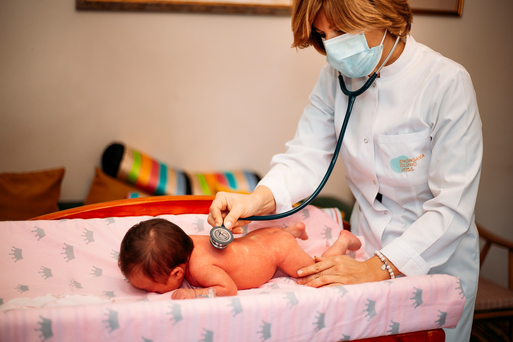
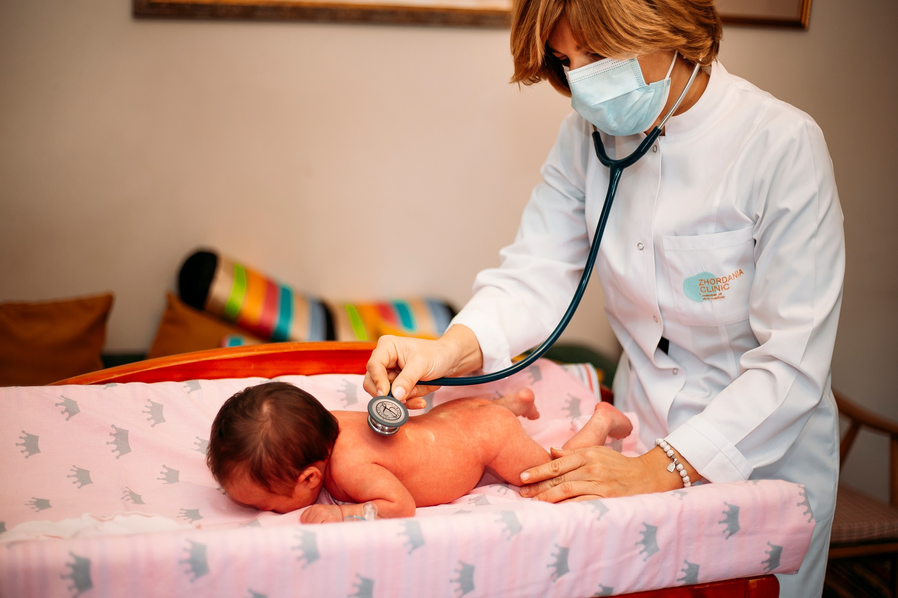

ჩვენი სერვისები

ექიმი-ნეონატოლოგის მომსახურება გულისხმობს ახალშობილის სრულფასოვან გასინჯვა / კონსულტაციას, რაც მოიცავს:
- ახალშობილის გულისა და ფილტვების შემოწმებას / მოსმენას
- ახალშობილის რეფლექსების შემოწმებას
- კანისა და ხილული ლორწოვანის შემოწმებას
- სხეულის მასის, სიგრძისა და თავის გარშემოწერილობის კონტროლს
- ახალშობილთა ძუძუთი და/ან ბოთლით კვების კონტროლს
ახალშობილთა ექთნის მომსახურება გულისხმობს მშობლების მხარდაჭერასა და სწავლებას ახალშობილზე ზრუნვაში, რაც მოიცავს:
- ბანაობას
- კანისა და ფჩხილების მოვლას
- ჭიპის დამუშვებას
- თვალების, ცხვირისა და პირის ღრუს ჰიგიენას
- ძუძუთი კვების ტექნიკა
- ბოთლით კვების ტექნიკა
ჩვენს შესახებ
ჩვენ ვართ მოქმედი პროფესიონალი ექიმებისა და ექთნების გუნდი, რომელსაც ერთ
თვემდე ახალშობილების მოვლისა და მკურნალობის მრავალწლიანი გამოცდილება გააჩნია.
ჩვენი გუნდის მიზანია, დავეხმაროთ და შევასწავლოთ ახალბედა მშობლებს ის პირველადი
უნარ-ჩვევები, რაც აუცილებელია ახალშობილი ბავშვის მოვლისთვის.
ჩვენ ვემსახურებით როგორც დროულ, ასევე
დღენაკლულ და მცირე მასის მქონე ერთ თვემდე ახალშობილებს.

"ყველა მშობელმა შინაგანად იცის, თუ როგორ უნდა
იზრუნოს თავის ახალშობილზე, თუმცა ხშირად მას
შეიძლება პროფესიონალი ექთნისა და ექიმის
მხარდაჭერა დასჭირდეს.
ჩვენი გუნდის მიზანია, დავეხმაროთ და შევასწავლოთ
ახალბედა მშობლებს ის პირველადი უნარ-ჩვევები,
რაც აუცილებელია ახალშობილი ბავშვის მოვლისთვის."
თამარ ბარამიძე, ექიმი-ნეონატოლოგი
სიახლეები
"ATTITUDE BABY"-ისა და “ბეიბირუმი“-ის ერთობლივი პრეზენტაცია:
27 ნოემბერს, სერვის „ბეიბირუმი“-ის პრეზენტაცია გაიმართა, უახლესი სერვისი,
რომლის ანალოგიც
საქართველოში არ არის, ვივო მედიქალ ჯგუფის კლინიკების ბაზაზე დაინერგა და გულისხმობს ახალშობილებზე
ზრუნვას, მოვლასა და მკურნალობას.
“ბეიბირუმი“-ის მრავალწლიანი გამოცდილების მქონე სპეციალისტების მიერ შეირჩა ATTITUDE (ატიტუდი)-ის
Baby leaves პროდუქტები კონსულტაციაზე ჩასაწერად დაგვიკავშირდით:
032 224 32
32
"ბეიბირუმის" ამბულატორიული სერვისები ჟორდანია-ჩიქოვანის კლინიკაში!
ჟორდანია-ჩიქოვანის კლინიკის გუნდს შემოუერთდა ექიმი-ნეონატოლოგი თუთო ბარამიძე:
ახალშობილთა რეანიმატოლოგი
სამშობიარო სახლსა და ახალშობილთა ინტენსიური თერაპიის განყოფილებაში 15 წლიანი
სამუშაო გამოცდილებით.
კონსულტაციაზე ჩასაწერად დაგვიკავშირდით:
032 224 32
32
სიახლე "ბეიბირუმში"!
"ბეიბირუმი" გთავაზობთ მომსახურებას პედიატრიის მიმართულებით, რომელიც მოიცავს
პედიატრის კონსულტაციას ამბულატორიულად და ბინაზე გამოძახებით. პედიატრის მომსახურებით შეუძლიათ
ისარგებლონ 0-დან 18 წლამდე ასაკის პაციენტებმა.
კონსულტაციაზე ჩასაწერად დაგვიკავშირდით:
032 224 32
32

გილოცავთ ბავშვთა დაცვის საერთაშორისო დღეს:
"ბეიბირუმი" გთავაზობთ მომსახურებას პედიატრიის მიმართულებით, რომელიც მოიცავს
პედიატრის კონსულტაციას ამბულატორიულად და ბინაზე გამოძახებით. პედიატრის მომსახურებით შეუძლიათ
ისარგებლონ 0-დან 18 წლამდე ასაკის პაციენტებმა. კონსულტაციაზე ჩასაწერად დაგვიკავშირდით:
032 224 32
32

ექსკლუზიური ფასადკალება „ბეიბირუმის“ სერვისებზე:
10 % ფასადკალება „ბეიბირუმის“ სერვისებზე, ვივო მედიქალ ჯგუფის კლინიკებში
აღრიცხული ორსული პაციენტებისათვის
კონსულტაციაზე ჩასაწერად დაგვიკავშირდით:
032 224 32
32

პროფესიონალთა გუნდი თქვენს გვერდით:
სერვისი ბეიბირუმი გთავაზობთ ახალშობილთა ექთნის მომსახურებას- დღენაკლულ, მცირე მასის, ინტენსიური
თერაპიის განყოფილებიდან გაწერილი ახალშობილების მოვლას, დედების ტრენინგს - პირველადი
უნარ-ჩვევების
სწავლებას, რაც აუცილებელია ახალშობილისათვის და აკმაყოფილებს თანამედროვე მოვლის გაიდლაინებს.
დაგვიკავშირდით:
032 224 32
32
გალერეა


 
